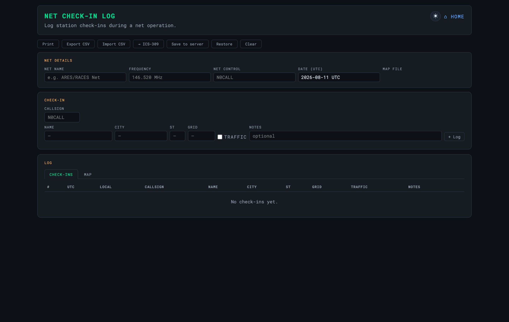

Field Tools
Net Check-in Logger
Log check-ins during a net and export CSV
The Net Check-in Log (tools/net-log.html) logs check-ins
during a net — callsign, name, location, and traffic — and exports the roster as
CSV. Like the calculators it is static HTML with per-browser localStorage,
so it works offline and needs no server.

✓
Pair it with FCC lookup to confirm a check-in’s name and location, and export the roster for the after-action report or an ICS-309 communications log.
Troubleshooting
| Symptom | Cause & fix |
|---|---|
| Check-ins vanished | The log lives in this browser’s localStorage. Use Export CSV or Save to server to persist it beyond one device. |
| The map has no pins | Check-ins need a grid square to place a pin — add one per entry. |
| Can’t import a CSV | Match the exported column format; a stray header or delimiter will reject the row. |
OASIS · off-grid amateur station information suite